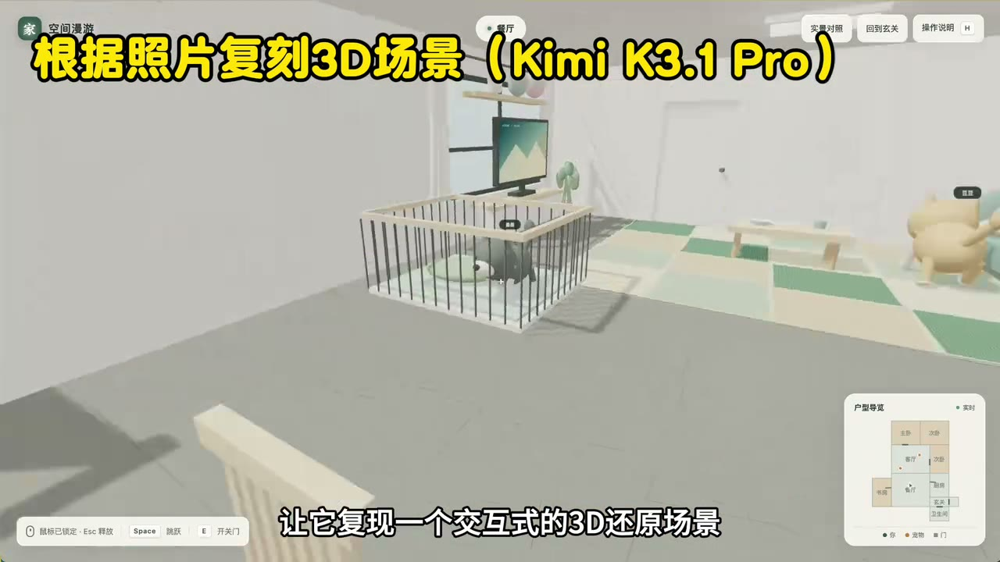

原视频 · 在线回看
点击后联网加载 B 站播放器；本地不下载整段视频。

原视频 · 在线回看
点击后联网加载 B 站播放器；本地不下载整段视频。
原标题：【闪客】当你对一个超大参数的模型进行后训练之后？Kimi K3.1 Pro 诞生！
UP 主：飞天闪客
时长：7 分 15 秒
链接：https://www.bilibili.com/video/BV15ZH36UEBg/
阅读强度：标准
一个模型已经有很大的参数规模，后续训练还能改变它在复杂任务中的表现吗？飞天闪客借一次模型版本更新讨论这个问题，又用自己准备的一组任务观察结果。下面的模型名称、榜单和个人测试都对应录制时所谈的版本；它们不能直接代表其他配置、后来版本或所有任务中的表现。
模型先经过预训练，获得处理大量数据中模式的能力；随后还可以继续训练，让它更适应某些目标或任务。这里讨论的后训练是在已有模型基础上进行进一步训练，训练会更新参数。
分享者关注的是大规模模型上的长任务训练。一个 Agent 要在终端里完成工作，可能需要读取资料、运行命令、使用工具、检查结果并继续调整。任务越长，环境和反馈越重要：需要准备终端、浏览器、代码仓库等工具，也要有能够复现任务并检查结果的环境，才能知道某次操作是否达到目标。
他结合自己做容器和调度的经验指出，规模扩大后，环境版本不一致、任务对资源需求不同，以及运行时间长短不同，都可能让调度更复杂。所谓容器可以理解为承载任务及其运行环境的一种隔离方式；调度则是决定任务在哪里运行、何时分配资源。即使评分规则明确，运行环境能否稳定复现，也会影响训练和测试。
分享者还提到终端任务基准上的分数变化和榜单位置。这样的数字需要和基准版本、具体模型配置、运行条件与评测机构一起阅读；不同测试中的分数和排名不能只凭一个数字直接比较。具体分数和配置需要查看对应评测记录。
分享者把七个任务分别放在目录里，让 Kimi K3.1 Pro 驱动的 Agent 依次读取并完成，并在自己的环境中用 GPT-6 Astra 重复这一流程。这样既能观察单个任务的产物，也能看多任务情况下如何安排工作。这是录制时的一次个人测试，提示词、工具与运行条件会影响结果。
第一项是根据家里不同角度的照片创建可交互的三维场景。分享者觉得两份结果的外观都有可取之处，但都与实际房间存在偏差。
第二项是处理一段真实口播视频，找出口误和重录位置。分享者称 Kimi 的结果记录了剪辑位置，并允许跳回原视频相应时刻检查。
第三项是常见文件格式转换。分享者认为这次结果基本满足要求。第四项则更具体：给模型一个家用空调控制程序的安装包，要求制作网页版本。他称 Kimi 的结果提供了模拟界面，GPT-6 的结果则能与设备通信并控制空调。这个对比显示界面看似完成和实际设备能否响应是两个验收条件；设备、协议和提示词均会影响结果。
第五项是在已有几何画板上增加文字与橡皮擦功能。分享者观察到两份实现的外观都不够理想，GPT-6 的橡皮擦实现了按像素擦除。这个任务需要同时检查功能行为与界面呈现：按钮是否存在只是开始，擦除范围和操作结果也要实际验证。
第六项把一个依赖 Python 服务的评测站改造成纯前端应用。分享者称两份结果在这次测试中均完成了任务。第七项要求阅读开发手册，实现文字生成图片再生成视频的页面接口。页面和调用逻辑得到正面评价，但生成视频时服务资源不足，两次运行都未完成这一步，因此这个案例无法据此判断最终视频生成质量。
个人测试的价值在于任务具体：房间重建可以对照照片，剪辑可以回到原片，控制页面可以检查设备是否真正响应。它也展示了同一任务的不同验收层次。比较模型时，最好保留输入、提示、工具配置、实际产物和失败环节；尤其要把模型没有完成的步骤，与外部服务资源不足等条件分开记录。
分享者对所测模型的总体评价较积极，同时承认一些细节仍有差距。对于读者，更有帮助的是把这些结果当作录制时的具体案例：模型能否处理自己的工作，还需要用自己的任务、数据和验收标准验证。